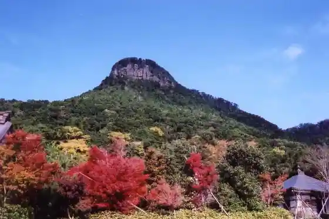
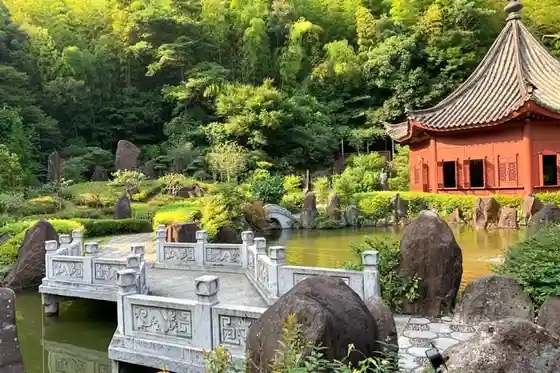
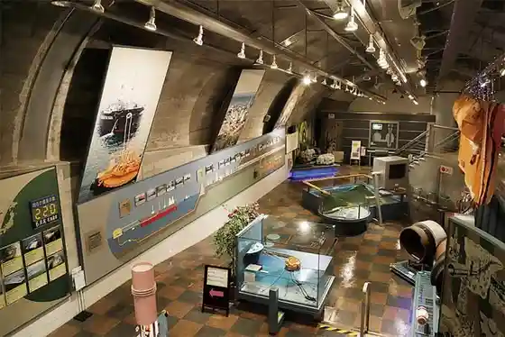
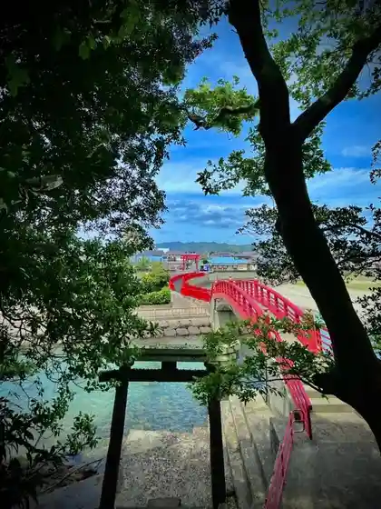

Kangaku
Ichikikushikino, Kagoshima · 0996-33-5640 · Official / source link

Kangaku Sono
Ichikikushikino, Kagoshima · 0996-21-5113 · Official / source link

Chikabi Tenjikan
Ichikikushikino, Kagoshima · 0996-32-4747 · Official / source link

Sho Shima Coast
Ichikikushikino, Kagoshima · 0996-33-5640 · Official / source link

Satsumahan Eikoku Ryugakusei to no Chi
Ichikikushikino, Kagoshima · 0996-21-5128 · Official / source link
Satsuma Yaki Hassho no Chi
Ichikikushikino, Kagoshima · 0996-21-5128 · Official / source link
Ichiki Fureai Onsen Center
Ichikikushikino, Kagoshima · 0996-21-5022 · Official / source link
Kannon Ke Ike City Tami Forest
Ichikikushikino, Kagoshima · 0996-36-2207 · Official / source link
Ichikikushikino Bussan Sa no Sa Kan
Ichikikushikino, Kagoshima · 0996-32-0780 · Official / source link
Kangaku Hanakawa Sabo Park
Ichikikushikino, Kagoshima · 0996-32-0760 · Official / source link
Arakawa Chiku no Hotaru
Ichikikushikino, Kagoshima · 0996-32-8809 · Official / source link
Shochu Kura Satsuma Kanayama Kura
Ichikikushikino, Kagoshima · 0996-21-2110 · Official / source link
Shochu Kura Sasshu Ya Dembe
Ichikikushikino, Kagoshima · 0996-36-3131 · Official / source link
Kangaku Yama Chinkoku Tera Choho In
Ichikikushikino, Kagoshima · 0996-21-2255 · Official / source link
Kushikino Sansetto Park
Ichikikushikino, Kagoshima · 0996-32-5256 · Official / source link
Kushikino Damu Shuhen
Ichikikushikino, Kagoshima · 0996-32-3111 · Official / source link
Gotanda Kawazoi
Ichikikushikino, Kagoshima · 0996-32-3111 · Official / source link
Satsumahan Eikoku Ryugakusei Memorial Museum
Ichikikushikino, Kagoshima · 0996-35-1865 · Official / source link
Nishidake Shrine
Ichikikushikino, Kagoshima · Official / source link
Hane Shima Hamanaka Minato Gyokuseki Seki Bohatei
Ichikikushikino, Kagoshima · 0996-33-5640 · Official / source link
Kangaku Onsen
Ichikikushikino, Kagoshima · 0996-21-2626 · Official / source link
Kohii Do Jamaika
Ichikikushikino, Kagoshima · 0996-32-0709 · Official / source link
Jito Kariya Ato
Ichikikushikino, Kagoshima · 0996-21-5113 · Official / source link
Satsumage Seizokotei Kengaku
Ichikikushikino, Kagoshima · Official / source link
Reimei Hane Shima Kankosen
Ichikikushikino, Kagoshima · 0996-31-0050 · Official / source link
Fumoto History Museum
Ichikikushikino, Kagoshima · 0996-32-5256 · Official / source link
Ichiki Ebisu Market
Ichikikushikino, Kagoshima · 0996-21-5082 · Official / source link
Kushikino City Gyokyo Chokuei Kaisen Maguro Ie
Ichikikushikino, Kagoshima · 0996-33-5015 · Official / source link
Satsuma Kushikino Maguro no Kan
Ichikikushikino, Kagoshima · 0996-29-5515 · Official / source link
Kushikino Fumoto
Ichikikushikino, Kagoshima · 0996-32-5256 · Official / source link
Kame Some Ya
Ichikikushikino, Kagoshima · 0996-32-3053 · Official / source link
Ichiki Osako Ie House
Ichikikushikino, Kagoshima · Official / source link